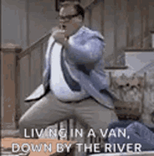
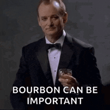
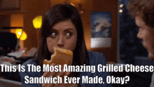
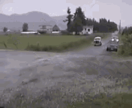

Now it's time for the most manly, masculine, and rugged grill cheese this side of the Mississippi
This recipe is for those whose hard times have hard times.
This is a recipe for the alpha type who bleeds red, white and blue.
This recipe is for those who are 35 years old, thrice divorced, and who are. . .

You should know what you need. Because this is a recipe however, here is what you need:
- Bread. Any bread. Just not mouldy bread.
- Cheese. Swiss. Marble. Anything that doesn't crumble.
- Butter. Margarine. As long as it turns bread golden brown. Use it.
- More confidence than your mama ever gave ya!
- If you lack confidence, consult the image below:

You honestly should know what to do. But for the love of all that is holy... here is what you do:
- Butter one side of each piece of bread. You're not made of money. That's why you're here.
- Heat up a pan to medium heat
- Placed the buttered side down on the pan. Place the cheese on top.
- Place the other buttered side facing up, with the unbuttered side lying on top of the cheese.
- Please tell me you got the previous instruction right. You did, right?
- Cook until it looks like this. Or don't. Whatever...

It should be done by now. I shouldn't have to tell you to eat it. I'm assuming you've got there by now you rugged manly man.

Now speed off in your van down by the river, well fed and ready to take on the day!
